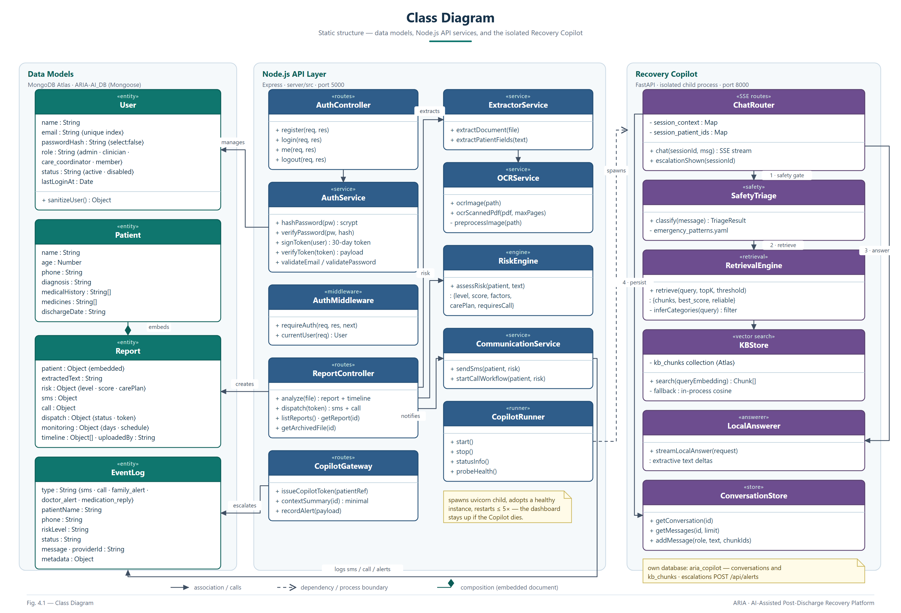
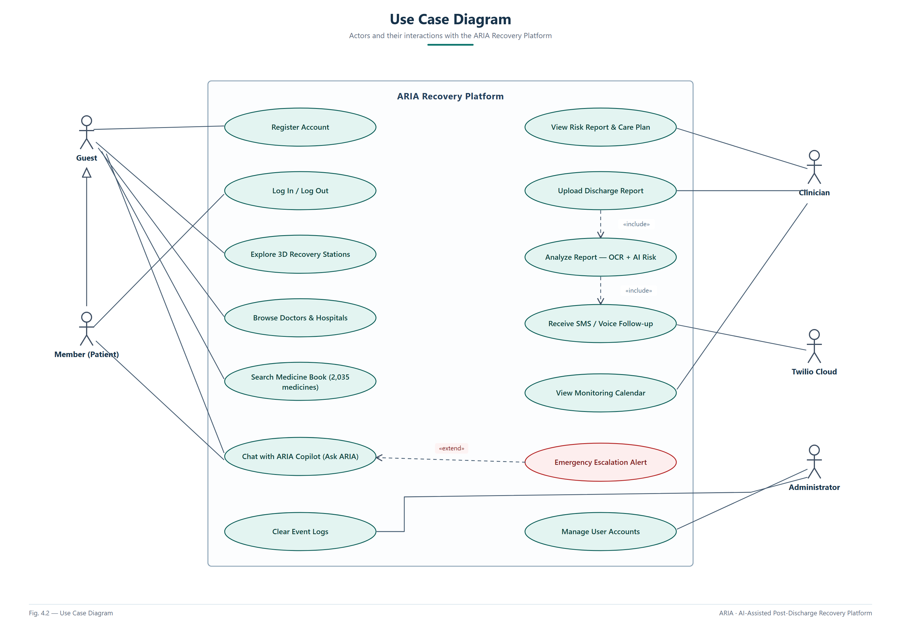
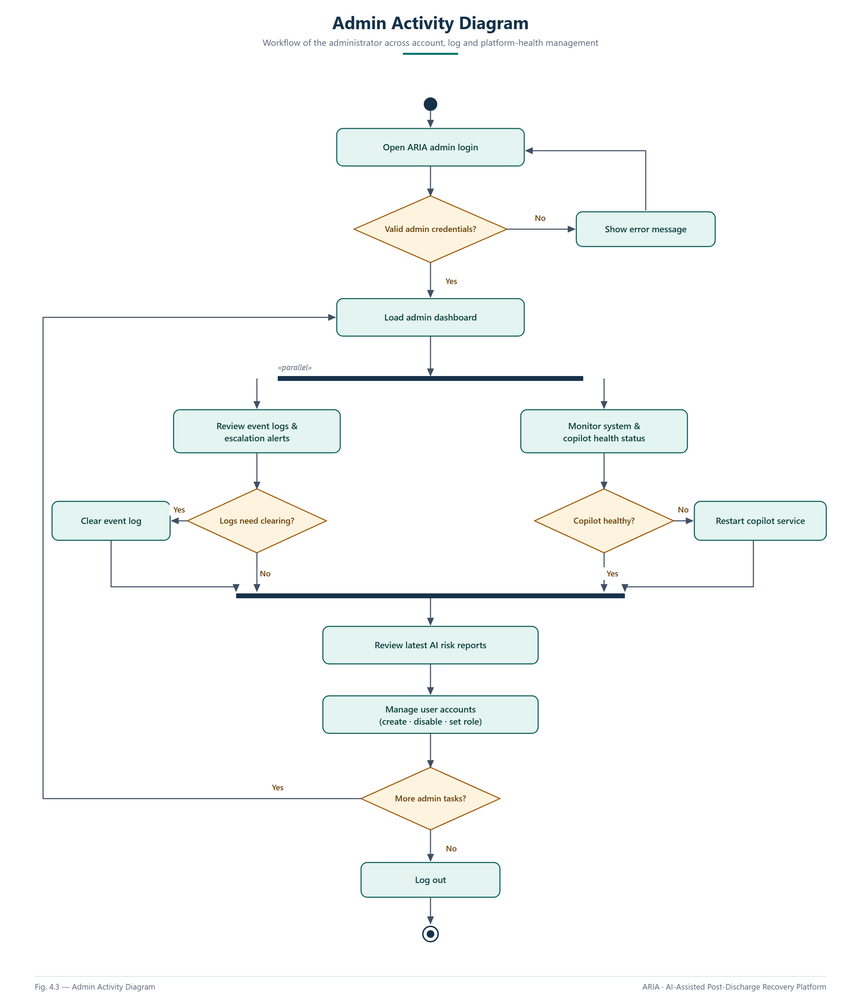
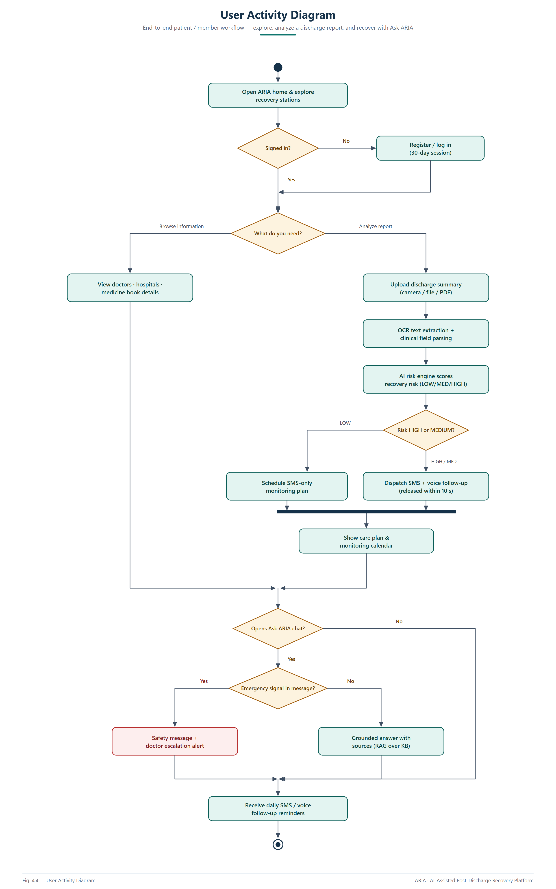
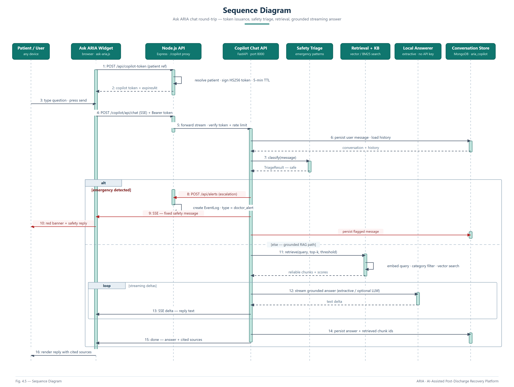
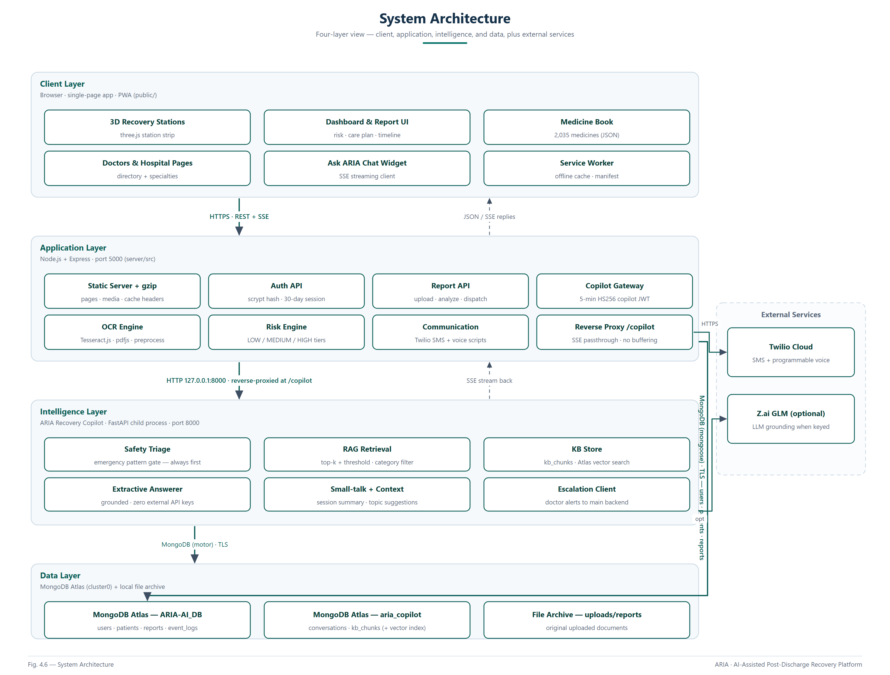
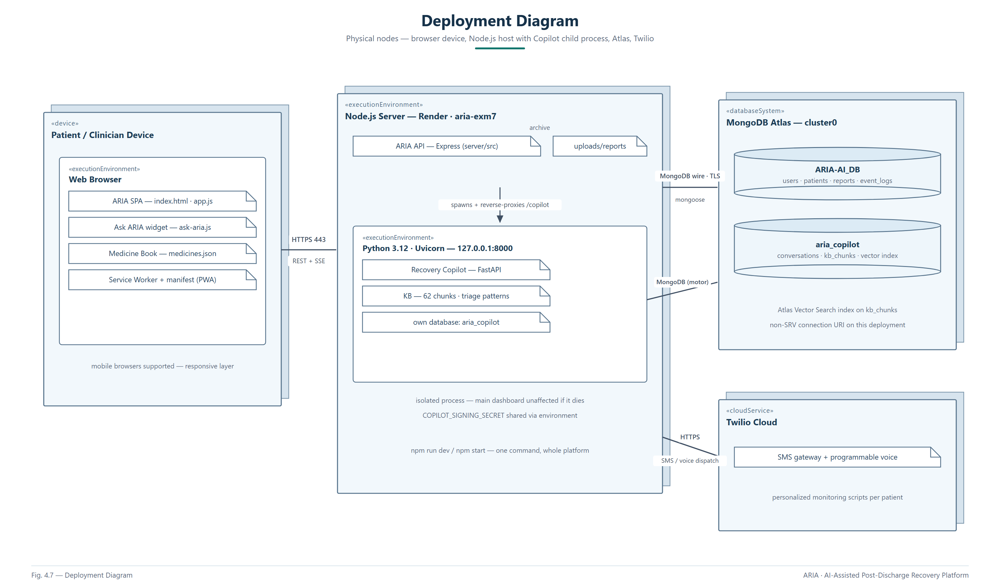
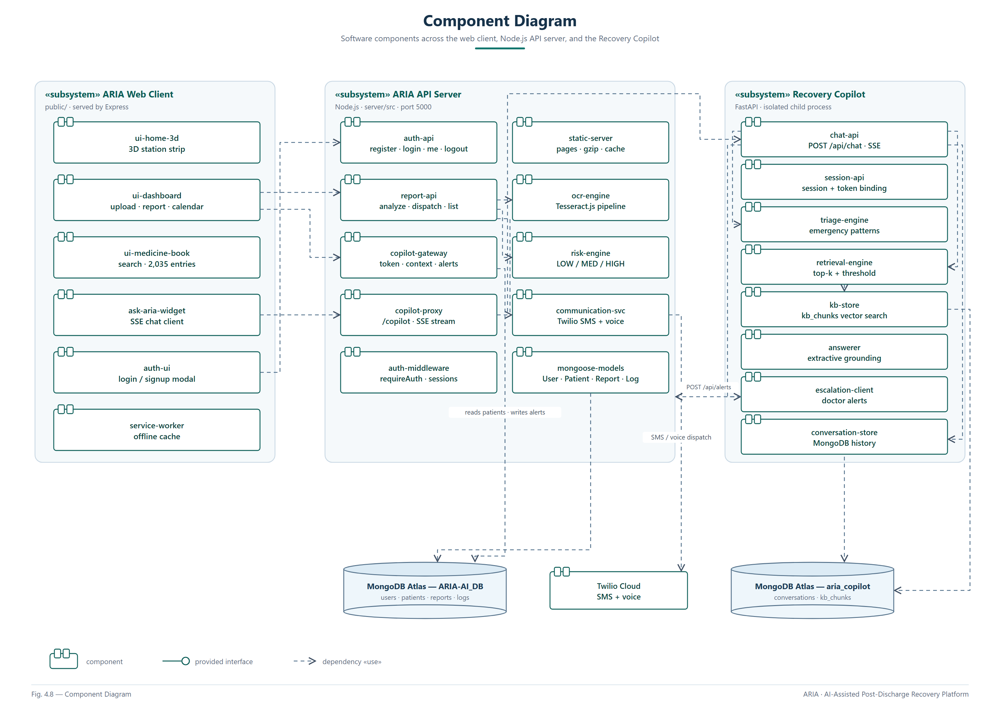

ARIA — Report Diagrams
Figures 4.1 – 4.8 for the project report · high-resolution PNG (2×) + editable SVG sources
Fig. 4.1 — Class Diagram

Fig. 4.2 — Use Case Diagram

Fig. 4.3 — Admin Activity Diagram

Fig. 4.4 — User Activity Diagram

Fig. 4.5 — Sequence Diagram

Fig. 4.6 — System Architecture

Fig. 4.7 — Deployment Diagram

Fig. 4.8 — Component Diagram
